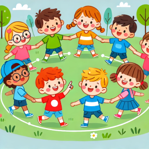
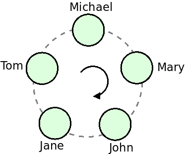

In what concerns the continuous evaluation solving exercises grade during the semester, you should submit until 23:59 of November 22nd
(this exercise will still be available for submission after that deadline, but without couting towards your grade)
[to understand the context of this problem, you should read the class #06 exercise sheet]

"Eeny, meeny, miny, moe" is a very well known children's counting-out rhyme (if you are portuguese, the equivalent would be "Pim Pam Pum").Michael has decided to play this game with his friends Mary, John, Jane and Tom. He started by selecting a sentence and observing how many words it had:
| Eeny | meeny | miny | moe | catch | a | tiger | by | the | toe |
| 1 | 2 | 3 | 4 | 5 | 6 | 7 | 8 | 9 | 10 |
Then all the five children put themselves in a circle:

Michael then starts to say the words in the sentence pointing first to himself and changing to the next clockwise person each time he said a new word, to see whom he was pointing to in the last word:
| Eeny | meeny | miny | moe | catch | a | tiger | by | the | toe |
| 1 | 2 | 3 | 4 | 5 | 6 | 7 | 8 | 9 | 10 |
| Michael | Mary | John | Jane | Tom | Michael | Mary | John | Jane | Tom |
Tom leaves the circle and the game continues with the remaining persons and starting at the person next to the one that was removed:
| Eeny | meeny | miny | moe | catch | a | tiger | by | the | toe |
| 1 | 2 | 3 | 4 | 5 | 6 | 7 | 8 | 9 | 10 |
| Michael | Mary | John | Jane | Michael | Mary | John | Jane | Michael | Mary |
Mary leaves and the game continues:
| Eeny | meeny | miny | moe | catch | a | tiger | by | the | toe |
| 1 | 2 | 3 | 4 | 5 | 6 | 7 | 8 | 9 | 10 |
| John | Jane | Michael | John | Jane | Michael | John | Jane | Michael | John |
John leaves and the game continues:
| Eeny | meeny | miny | moe | catch | a | tiger | by | the | toe |
| 1 | 2 | 3 | 4 | 5 | 6 | 7 | 8 | 9 | 10 |
| Jane | Michael | Jane | Michael | Jane | Michael | Jane | Michael | Jane | Michael |
Michael leaves the circle and Jane is the last one standing, winning the game!
Can you help the children play the game?
Given a sentence with K words and the names of N children, your task is to simulate the game by going round and round always eliminating the K-th child, printing the names of the children as they are removed.
The first line of the input contains a sentence with K words separated by single spaces.
The second line of the input contains an integer N, followed by the N lines, each one with the name of one child (a single word), in the order they are in the circle.
You may assume that all the words (both in the sentence and in the names) are constituted only by letters (that can be in upper or lower case) and with a length of at most 100.
The output should consist of N lines, each one with a name of a child in the order they are eliminated in the game (with the last name being the winner) if you always eliminate the K-th child. You should start to count on the first child that comes in the input.
The following limits are guaranteed in all the test cases that will be given to your program:
| 1 ≤ K ≤ 100 | Number of words in the sentence | |
| 1 ≤ N ≤ 100 | Number of children |
| Example Input 1 | Example Output 1 |
Eeny meeny miny moe catch a tiger by the toe 5 Michael Mary John Jane Tom |
Tom Mary John Michael Jane |
| Example Input 2 | Example Output 2 |
pim pam pum 10 PedroRibeiro AnaTomas TiagoCarvalho JadnaCruz FilipaRamos VascoCruz BernardoLeite IohanSoares VanessaSilva JorgeOliveira |
TiagoCarvalho VascoCruz VanessaSilva AnaTomas BernardoLeite PedroRibeiro IohanSoares FilipaRamos JorgeOliveira JadnaCruz |